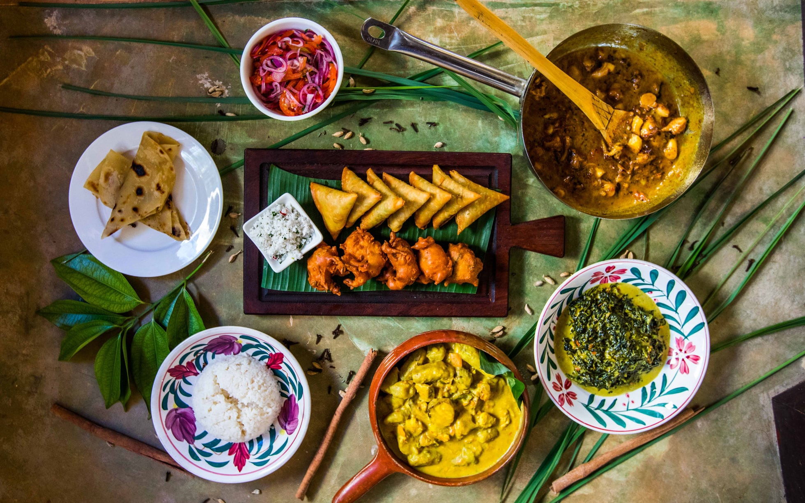

Cooking Class
Length: Half Day
Experience the rich flavors of Zanzibar's Swahili cuisine in an immersive cooking class. Learn about the local spices grown on a spice farm and how they are used in traditional dishes. With hands-on instruction, you'll have the opportunity to cook 4-5 different dishes and enjoy your creations as lunch. The class lasts for 3-4 hours and is a unique way to gain a deeper understanding of the island's culinary culture.
-
What you can expect:
- pickup from your hotel
- cooking class
- transfer back to your hotel